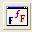

- meno fontu (Times, Courier, ...)
- rez písma (normálne, šikmé, tučné)
- veľkosť (8,10,12,...)
- iné vlastnosti (farba, kódovanie,...)
a v object inspector alebo príkazmi možno pred zavolaním okna nastaviť nejaké vlastnosti
- device - určíme z akej sady písiem sa bude vyberať ( screen, printer)
- obmedzenie na maximálnu a minimálnu veľkosť veľkosti písma
V tomto okne je viacero vstupných polí, v ktorých volíme jednotlivé vlastnosti písma a dve tlačítka OK a Storno.
Funkcia nadobúda logickú hodnotu TRUE - ak užívateľ stlačí OK
a FALSE ak stlačí Storno alebo okno len zavrie. Ak stlačíme OK vlastnosti písma sa zapíšu do FontDialog1.Font
Vytvoríme nasledovný formulár.
Form1
|  |
Program na obsluhu tlačídka by mohol byť nasledovný:
Unit1.pas
void __fastcall TForm1::Button1Click(TObject *Sender)
{
if (FontDialog1.Execute) Memo1->Font = FontDialog1->Font;
else ShowMessage("Voľba písma bola zrušená užívateľom");
end;
|
| 1. Vytvor nasledovný program
stiahnuť | 2. Vytvor nasledovný program
stiahnuť |